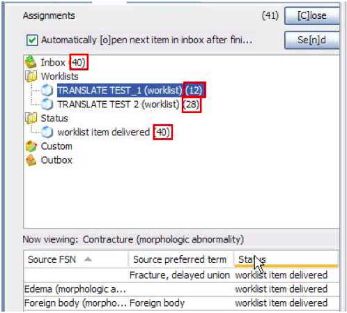
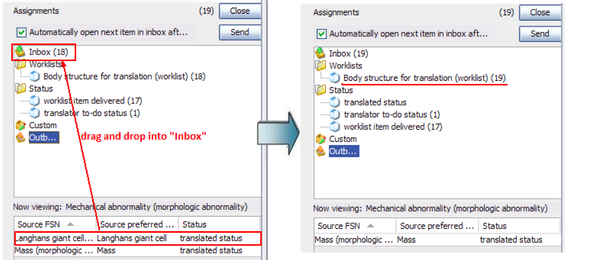
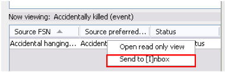
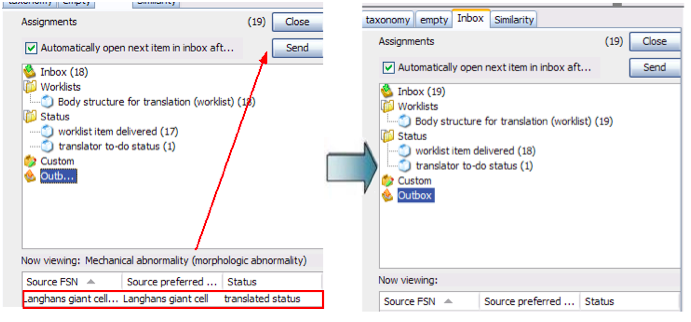

The translation inbox displays the worklist items assigned to him/her and delivered to
his/her inbox, with the number of each assignment in brackets. It is dividd in two parts:
- The upper half of the left pane shows the Inbox with a folder containing the worklists
assigned (with the numbers of worklist items in brackets). Also, there is another folder
that displays the worklist items by status (delivered, to-do, rejected, etc.). A third
folder named “Custom” allows the user to drag and drop worklist items from different
worklists and/or statuses to work with according to his/her own preferences/priorities.
- Finally, the Outbox shows in brackets the number of worklist items awaiting to be sent
to the following step in the workflow:

- Next to the Close button, the number of worklist items contained in the Inbox is
displayed in brackets. This number will change as concepts are sent from the Inbox to the
Outbox.
- The number of worklist items in the Outbox will return to zero upon clicking Send
button.
- The lower half displays the worklist members in a table, according to the user’s
specifications. Between both sections there is an area That reads “Now viewing: ….”, which
displays the worklist member shown in the translation pane.
Outbox (undo function)
Due to the operating features of the workbench this is not an easy option. Therefore, all the
concepts sent to the following step in the workflow are kept in a “transient outbox".
At this point, the user may introduce changes to the translated concepts and modify their
status (e.g. from “translated” status to “to-do”) by clicking on a given concept and drag and
dropping it into the Inbox icon. It will automatically be “reintroduced” into the original
worklist, as shown in the figure below.

- Notice that the number of worklist members changed when the concept was “returned” to
the Inbox and the concept to be modified has now disappeared from the Outbox list.
- The same action may be performed by right-clicking the selected worklist item.

- Also, the user may confirm the action done and send the concepts to the following step
in the workflow. By clicking upper “Send” button, the concepts will definitively disappear
from his/her assignment:

- If you don't click SEND button, the concepts left in the Outbox will be automatically sent
the next time the translation inbox is opened.
- The Outbox is a common feature for all the roles in the workflow, as is intended to
provide another revision instance prior to the submission to the following workflow
step.